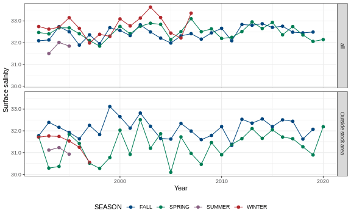
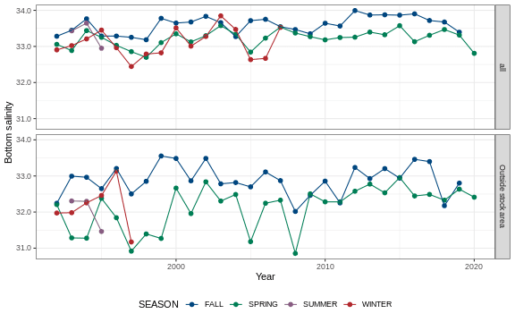

2.3 Salinity
Surface and bottom salinity data were pulled from survdat.
2.3.1 Figures
Separate geom_gls() functions were fit for fall and spring measurements; trend lines are only shown when the trend was statistically significant, so some plots may have fewer than two trend lines. Fall has solid trend lines, and spring has dashed trend lines. Please note, sometimes the survey observed a small number of fish outside of the defined stock area.
s-salin

b-salin
Figure 2.5: Atlantic herring surface salinity

Figure 2.6: Atlantic herring bottom salinity
2.3.2 Summary
salin_summary
2.3.3 Data
salin_data